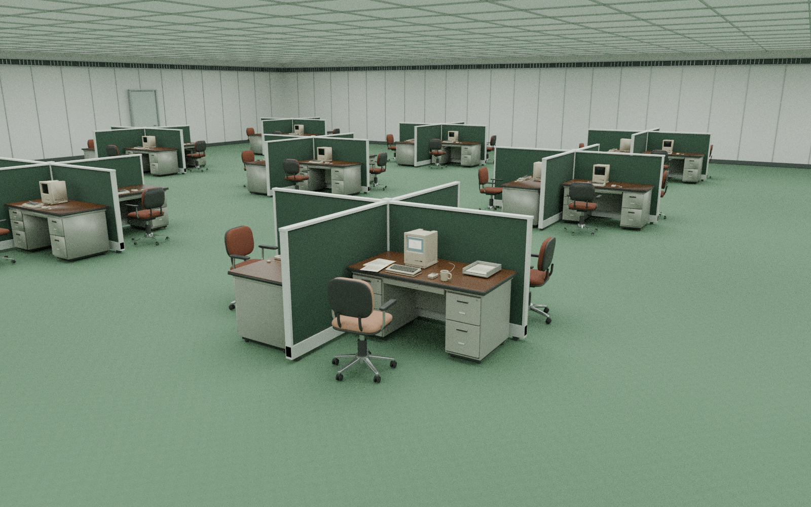

3D is unavailable in this browser.
Open portfolio
Open portfolio →
WORKSTATION
SYSTEM STARTUP
>
open office
0 / 9
Loading the office…
▋
↙ Back to desk
Esc
JavaScript is needed for the 3D desk.
Read the résumé
.